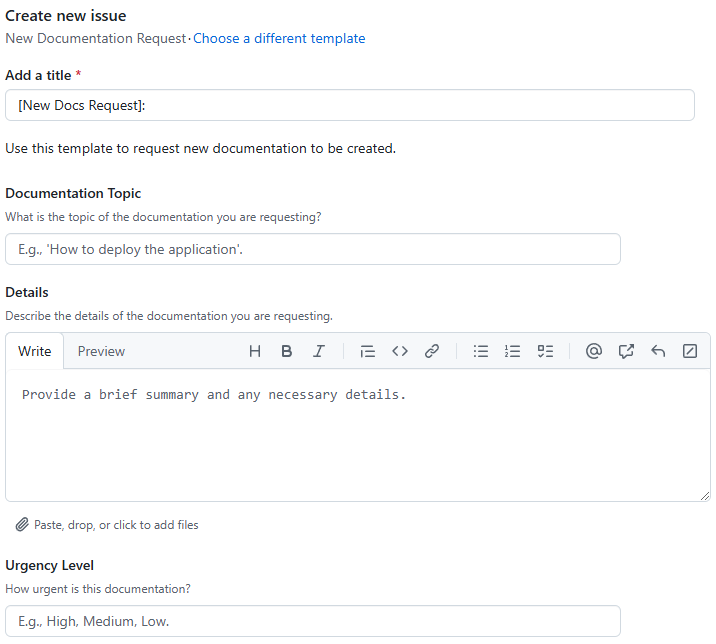

Feedback and Issue Reporting Guide
Welcome to the Field Day feedback and issue reporting guide. This document will help you understand how to report issues, request features, and provide feedback for the Field Day project.
Introduction
At Field Day, we value your feedback and strive to continuously improve our tools. The Field Day project uses GitHub to manage issues, feature requests, and documentation feedback. This guide will walk you through the process of reporting issues and requesting features using GitHub.
What is GitHub?
GitHub is a tool for software developers, but you don’t need to be a developer to use it. It’s a user-friendly platform that allows you to report issues, request features, and provide feedback on the Field Day project.

GitHub is a platform for version control and collaboration. It allows multiple people to work on projects simultaneously, track changes, and manage different versions of the project. To report issues or request features for Field Day, you will need a GitHub account. Don’t worry, it’s free and easy to sign up.
How to Sign Up for GitHub
-
Visit the GitHub website: https://github.com/join
-
Fill in the required information to create your account.
-
Verify your email address by clicking the link sent to your email.
-
Complete the setup process by following the on-screen instructions.
Browsing Existing Issues
If you’re already in a repository on GitHub, you can access the issues tab by clicking on the "Issues" tab at the top of the repository page.
Browsing existing issues is a good way to get a feel for the state of the project and see if your issue or feature request has already been reported. Here’s how you can browse existing issues:
-
Visit the appropriate repository for your issue:
-
Use the search bar at the top of the issues page to search for keywords related to your issue or feature request.
Figure 3. Issue Search Bar -
Browse through the list of issues to see if your issue has already been reported. If you find a similar issue, you can add your comments or additional information to that issue instead of creating a new one.
 Figure 4. Issue List
Figure 4. Issue List
Reporting Issues and Requesting Features
To report issues or request features, you will need to create a new issue on GitHub. Follow these steps:
-
Visit the appropriate repository for your issue:
Before creating a new issue, it’s important to check if the issue has already been reported. This helps avoid duplicates and ensures that all feedback is consolidated. See the above section on browsing existing issues.
-
Choose an appropriate template for your issue:
Figure 5. Issue Template Options for DocumentationThe following tables contain the available issue templates for documentation and application-related issues.
Table 1. Issue Template Types for Documentation Template Type Description New Documentation Request
Use this template to request new documentation for features or processes that are not yet documented.
Documentation Feedback
Use this template to provide feedback on existing documentation, including suggestions for improvements or corrections.
General Issue
Use this template for any other documentation-related issues that do not fit into the other categories.
Blank Issue
Use this template if none of the other documentation templates fit your needs. This template allows you to describe your issue in detail.
Table 2. Issue Template Types for Application Template Type Description Bug Report
Use this template to report bugs or issues you encounter while using the application.
Feature Request
Use this template to request new features or enhancements for the application.
Enhancement Request
Use this template to suggest improvements or enhancements to existing features in the application.
-
Fill in the required information in the template and submit your issue. Required fields are marked with a red asterisk (*).
Figure 6. Issue Form for a New Documentation Request -
Press the "Create" button to submit your issue.
Figure 7. Create Issue Button -
You’re done! You should have been redirected to the issue you created. You can now track the progress of your issue and provide additional information if needed. 🎉
 Figure 8. Newly Created Issue
Figure 8. Newly Created Issue